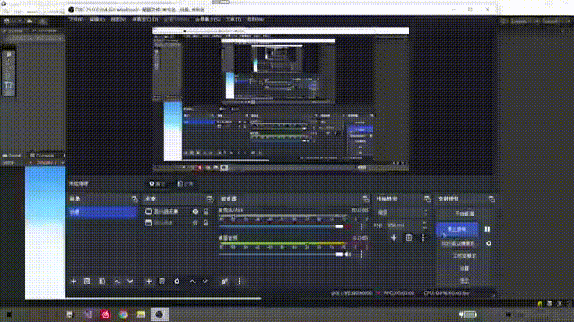
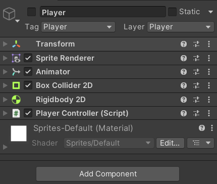
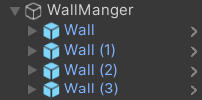

# 观前提醒
项目会在 GitHub 中开源，链接：https://github.com/Maikire/UnityGameDemo/tree/main/01-02
本项目不涉及框架和设计，很适合初学者。
# 小游戏

如上面所展示的，这是一种很常见很简单的小游戏，接下来让我们一步一步地来实现它。
# 角色控制
首先要明确的一点，角色是否可以左右移动？
如果可以，那么摄像机和背景都要跟着动。
如果不可以，哪么只需要处理这些墙体就可以了。本文选择的是：不可以左右移动。这样做起来会更简单。
那么接下来只需要上下移动。组件如下（注：刚体要有重力）

关于动画：需要用到 Animator ，这里没有展示， 可以去看看项目
代码如下：
[Tooltip("向上的速度")] | |
public float Move_Up; | |
private Rigidbody2D Player; | |
// 将这两个属性放到这里面，方便获取 | |
public int Score; // 得分 | |
public bool IsGameOver; // 游戏是否结束 | |
private void Start() | |
{ | |
Player = this.GetComponent<Rigidbody2D>(); | |
Score = 0; | |
IsGameOver = false; | |
} | |
private void Update() | |
{ | |
Jump(); | |
} | |
public void Jump() | |
{ | |
if (!IsGameOver) | |
{ | |
if (Input.GetMouseButtonDown(0)) | |
{ | |
// 施加一个向上的速度 | |
Player.velocity = Vector2.up * Move_Up; | |
} | |
} | |
} |
# 墙体控制
墙体需要向左移动（给玩家一种角色在向右移动的错觉）
墙体需要有两个碰撞器和一个触发器，触发器在中间，角色碰到碰撞器直接游戏结束 ，当角色从触发器中出去的时候增加分数。
代码如下：
/// <summary> | |
/// WallController | |
/// </summary> | |
public class WallController : MonoBehaviour | |
{ | |
[Tooltip("移动速度")] | |
public float MoveSpeed; | |
[HideInInspector] | |
public Vector2 OriginalLocation; | |
[HideInInspector] | |
[Tooltip("true：启用触发器")] | |
public bool IsTriggerActive; | |
private void Start() | |
{ | |
OriginalLocation = this.transform.position; | |
IsTriggerActive = true; | |
} | |
private void Update() | |
{ | |
Move(); | |
} | |
/// <summary> | |
/// 控制移动 | |
/// </summary> | |
private void Move() | |
{ | |
this.transform.Translate(Vector2.left * MoveSpeed * Time.deltaTime); | |
} | |
private void OnCollisionEnter2D(Collision2D collision) | |
{ | |
collision.transform.GetComponent<PlayerController>().IsGameOver = true; | |
} | |
private void OnTriggerExit2D(Collider2D collision) | |
{ | |
if (IsTriggerActive) | |
{ | |
collision.GetComponent<PlayerController>().Score++; | |
} | |
} | |
} |
# 墙体的 “生成”
墙体位置
- X 轴的值：需要确定间隔
- Y 轴的值：使用随机数
- 需要提前在场景中摆好这四个墙体
同样的墙体只需要 4 个，直接将墙体放到一起统一管理

WallManger 的脚本如下
[Tooltip("Y位置上限")] | |
public float PositionMax = 2.4f; | |
[Tooltip("Y位置下限")] | |
public float PositionMin = -2.33f; | |
[Tooltip("位置间隔")] | |
public float Interval = 6; | |
[Tooltip("移出屏幕的偏移量")] | |
public float Offset = 150f; // 当墙体移出屏幕时，应该将它循环利用 | |
[HideInInspector] | |
public Transform[] Walls; | |
private float RandomPosition; //Y 轴随机位置 | |
private Vector3 NewPosition; | |
[HideInInspector] | |
public Transform Last; // 最后一个 | |
[Tooltip("加分出现概率 X/100")] | |
// 这个是可以加 10 分的物体，用触发器触发，下文中会说明 | |
// 挂载的脚本为 DrumstickController | |
// 还有一个池子（实际上就是队列） DrumstickPool | |
public float Probability = 50; | |
private void Start() | |
{ | |
Walls = new Transform[this.transform.childCount]; | |
NewPosition = new Vector3(0, 0, 0); | |
Initialization(); | |
Last = Walls[Walls.Length - 1]; | |
} | |
private void Update() | |
{ | |
GeneratePosition(); | |
} | |
/// <summary> | |
/// 初始化 | |
/// </summary> | |
private void Initialization() | |
{ | |
// 获取所有的 Wall | |
for (int i = 0; i < Walls.Length; i++) | |
{ | |
Walls[i] = this.transform.GetChild(i); | |
} | |
} | |
/// <summary> | |
/// 生成位置 | |
/// </summary> | |
private void GeneratePosition() | |
{ | |
foreach (var item in Walls) | |
{ | |
// 移出屏幕的判定 | |
if (Camera.main.WorldToScreenPoint(item.position).x < -Offset) | |
{ | |
// 重新移动到新位置 | |
RandomPosition = UnityEngine.Random.Range(PositionMin, PositionMax); | |
NewPosition.x = Last.position.x + Interval; | |
NewPosition.y = RandomPosition; | |
item.position = NewPosition; | |
// 加 10 分的物体，概率出现 | |
if (UnityEngine.Random.Range(0, 100) < Probability) | |
{ | |
GameObject temp = DrumstickPool.Intance.GetDrumstick(item.position); | |
temp.GetComponent<DrumstickController>().MoveSpeed = item.GetComponent<WallController>().MoveSpeed; | |
} | |
Last = item; | |
} | |
} | |
} |
# 特殊物体
加 10 分的物体，概率出现，使用触发器，移出屏幕或触发后回收即可，具体代码不多赘述了
主要是如何生成以及回收，这里使用的是池子，它的好处就是循环利用，没有过多生成以及 Destroy () 的性能消耗
它的本质是一个队列，通用性很高。
代码如下：
// 使用这个类的入口，因为只需要一个实例，所以提供一个接口 | |
public static DrumstickPool Intance; | |
[Tooltip("Drumstick")] | |
public GameObject Drumstick; | |
private Queue<GameObject> Pool; // 队列 | |
private void Awake() | |
{ | |
Intance = this; | |
} | |
private void Start() | |
{ | |
Pool = new Queue<GameObject>(); | |
} | |
public GameObject GetDrumstick(Vector2 position) | |
{ | |
if (Pool.Count > 0) | |
{ | |
GameObject temp = Pool.Dequeue(); | |
temp.transform.position = position; | |
temp.SetActive(true); | |
return temp; | |
} | |
else | |
{ | |
return Instantiate(Drumstick, position, Quaternion.identity); | |
} | |
} | |
public void RecoveryDrumstick(GameObject drumstick) | |
{ | |
Pool.Enqueue(drumstick); | |
drumstick.SetActive(false); | |
} |
# 背景
需要一个组件 EdgeCollider2D ，这样就可以使用一条曲线来控制碰撞器的范围，撞到了就游戏结束，代码就不展示了
# 层级碰撞忽略
可以忽略一些无用的碰撞
//9：Player 10：Back 12:Wall | |
private void Awake() | |
{ | |
Physics2D.IgnoreLayerCollision(10, 12); | |
Physics2D.IgnoreLayerCollision(12, 12); | |
} |
# UI
UI 比较简单，只需要三个：显示分数，显示游戏结束（重新开始的按钮），游戏开始的按钮
显示分数很简单，不展示代码了，其他部分请看下文
# 开始游戏、游戏结束、重置游戏
由于游戏的变量较少，可以用一个脚本来控制
功能包括：
- 开始游戏：UI，启动角色，初始化所有数值
- 游戏结束：停止墙的运动，UI
- 重置游戏：初始化所有数值
- 注意：因为使用触发器判断，所以在重置游戏的时候，需要利用协程，让触发器延迟开启
代码如下：
// 有的地方没有注释，直接看名字就知道是什么了 | |
/// <summary> | |
/// ReStart | |
/// </summary> | |
public class ReStart : MonoBehaviour | |
{ | |
[HideInInspector] | |
public bool IsStartGame = false; | |
public GenerateWall WallManger; | |
public PlayerController Player; | |
public WallController Wall; | |
public GameObject GameoverUI; | |
public GameObject StartUI; | |
public GameObject PressUI; | |
private void Update() | |
{ | |
IfGameOver(); | |
} | |
public void StartButton() | |
{ | |
IsStartGame = true; | |
ReStartAll(); | |
Player.gameObject.SetActive(true); | |
PressUI.SetActive(true); | |
StartUI.SetActive(false); | |
} | |
public void ReStartButton() | |
{ | |
ReStartAll(); | |
PressUI.SetActive(true); | |
GameoverUI.SetActive(false); | |
} | |
private void StopAll() | |
{ | |
foreach (var item in WallManger.Walls) | |
{ | |
item.GetComponent<WallController>().MoveSpeed = 0; | |
} | |
foreach (var item in GameObject.FindGameObjectsWithTag("Drumstick")) | |
{ | |
item.GetComponent<DrumstickController>().MoveSpeed = 0; | |
} | |
} | |
private void ReStartAll() | |
{ | |
Player.IsGameOver = false; | |
Player.Score = 0; | |
//Wall | |
foreach (var item in WallManger.Walls) | |
{ | |
WallController wallController = item.GetComponent<WallController>(); | |
wallController.IsTriggerActive = false; | |
wallController.MoveSpeed = Wall.MoveSpeed; | |
item.position = wallController.OriginalLocation; | |
this.StartCoroutine(ResetWallTrigger(wallController)); | |
} | |
WallManger.Last = WallManger.Walls[WallManger.Walls.Length - 1]; | |
//Drumstick | |
foreach (var item in GameObject.FindGameObjectsWithTag("Drumstick")) | |
{ | |
DrumstickPool.Intance.RecoveryDrumstick(item); | |
} | |
//Player | |
Player.transform.position = Vector3.left * 2; | |
} | |
private void IfGameOver() | |
{ | |
if (Player.IsGameOver) | |
{ | |
StopAll(); | |
if (IsStartGame) | |
{ | |
PressUI.SetActive(false); | |
GameoverUI.SetActive(true); | |
} | |
} | |
} | |
/// <summary> | |
/// 延迟开启触发器检测 | |
/// </summary> | |
/// <param name="wallController"></param> | |
/// <returns></returns> | |
private IEnumerator ResetWallTrigger(WallController wallController) | |
{ | |
yield return new WaitForSeconds(0.5f); | |
wallController.IsTriggerActive = true; | |
} | |
} |
# 大功告成
现在，我们已经完成了这个游戏，是不是非常简单呢？
Then, play and enjoy it.